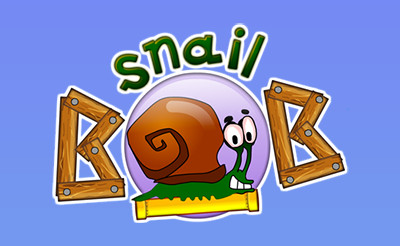
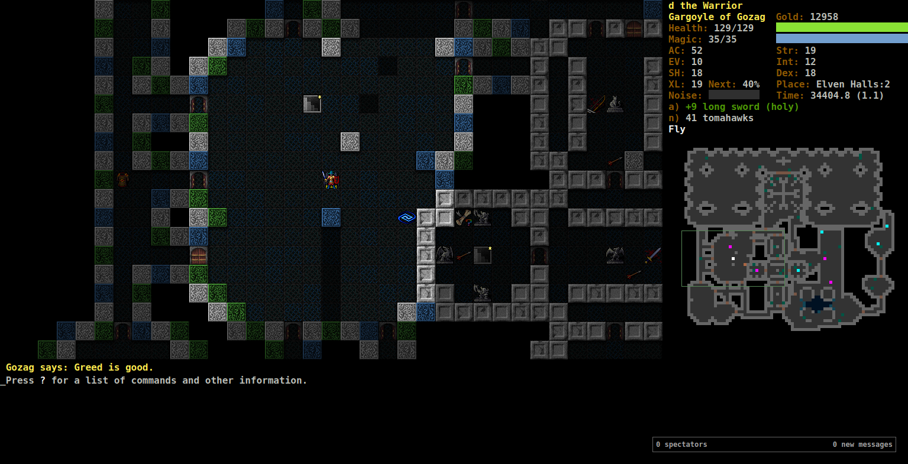
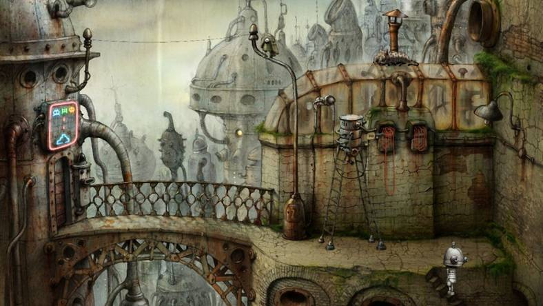

Dobre gry
obiektywnie dobre gry, jesli sie nie zgadzasz z tą listą, jesteś najprościej w błedzie.
Bob Ślimak

Bob ślimak to dobra, stara, flashowa gra; ogólnie to trzeba pograć jak sie nie grało nigdy to sie nie wie co to dobre flashowe gry. Klikanie myszką w grze, majstrowanie przy prędkości boba. Trzeba być spostrzegawczym, żeby znaleźć wszystkie gwiazdki.
DCSS
Dungeon Crawl Stone Soup to jest rougelike gra rpg, to znaczy, że umierasz postacią permamentnie jak stracisz życie. Poziomy są generowane, wraz ze potworzyskami, itemami, i wszystkim to co dobre. Jest dużo postaci i jest dobry przekaz, bo dobry przekaz jest najważniejszy.
Machinarium

Wskaż i Klikaj; gdyby ktoś nie rozlał oleju, to gra była by zdecydowanie krótsza. Dobra gra.
Hylics
Twórca palił zioło, bawił sie gliną/plasteliną i użył mielarki do mięsa w celu uzyskania OST. Innymi słowy bardzo dobra gra, która przez swoją abstrakcyjno-surrealistyczną nature jest dobrze wspomina przez wielu graczy gier niezależnych. Warto też pograć w Hylics 2.
Dobra muzyka
polski rap z wulgaryzmami.
Hava Naguila - Techno Remix
Hava Naguila, ale techno. Nic dodać, nic ująć.
Black Magick SS - Rainbow Nights (Cały Album)
dobra muzyka
Morowe - Głęboko pod ziemią
Wstali we dwóch, sami, od stołu, Ogromny majestat odczuwając, Ale to oni byli bogiem, Alkohol i dym ciała ich wypełnił I w pół przezroczyste bliźniaczki Stołem stracili.
Black Magick SS - Rainbow Nights (Cały Album)
Wędrowcy Tułacze Zbiegi to konkretny zespół. Ten album po prostu mi sie podoba. Warto ogarnąć "Marynistyke Suchego Lądu", "Berliner Vulkan", "Kiedy deszcz zaczął padać na zawsze".
Ukryty artykuł
???
Problem łańcucha
Wyobraźmy sobie zbiór E, składający się z n różnych elementów. Zbiór Ek to zbiór N-elementowych wariacji z powtórzenami elementów ze zbioru E. Dla przykładu:
Niech E = {A, B, C}; N = 2
Ek = {AA, AB, AC, BA, BB, BC, CA, CB, CC}
Ustalmy teraz łańcuch L.
Łańcuch L możemy podzielić na nieskończoną ilość elementów długości N;
Takie elementy nazwę kursorem Cc.
Kursor Cc tworzony jest z elementów łańcucha L,
gdzie c to liczba całkowita, oznaczająca pozycje znaku łańcucha,
od którego ma kursor zacząć iterować (c=0 oznacza pierwszy znak).
Iterując przez N znaków łańcucha (począwszy od c-tego znaku),
dopisujemy do kursora znak.
Łańcuch L "zapętla się", to znaczy że kursor który przekroczył ilość znaków
łańcucha L, iteruje od początku łańcucha.
Dla przykładu:
Niech L=ABC; N=2
C0 = AB ( [AB]C )
C1 = BC ( A[BC] )
C2 = CA ( A]B[C , AB[CA]BCABC...)
C3 = AB ( ABC[AB]CABCABC... )
Sume tych kursorów, gdy c={0, 1, 2, 3...n}, możemy zapisać jako zbiór Ck. Dla przykładu:
Niech L=ABC; N=2
C0 = AB
C1 = BC
C2 = CA
Ck = {AB, BC, CA}
Trywialny łańcuch L, którego suma kursorów jest równa Ek, można stworzyć poprzez konkatenacje elementów Ek. Dla przykładu:
Przykład 1:
Niech E={A, B, C}; N=2
Ek={AA, AB, AC, BA, BB, BC, CA, CB, CC}
L=AAABACBABBBCCACBCC
C0 = AA ( [AA]ABACBABBBCCACBCC )
C1 = AA ( A[AA]BACBABBBCCACBCC )
C2 = AB ( AA[AB]ACBABBBCCACBCC )
C3 = BA ( AAA[BA]CBABBBCCACBCC )
C4 = AC ( AAAB[AC]BABBBCCACBCC )
C5 = CB ( AAABA[CB]ABBBCCACBCC )
C6 = BA ( AAABAC[BA]BBBCCACBCC )
C7 = AB ( AAABACB[AB]BBCCACBCC )
C8 = BB ( AAABACBA[BB]BCCACBCC )
C9 = BB ( AAABACBAB[BB]CCACBCC )
C10 = BC ( AAABACBABB[BC]CACBCC )
C11 = CC ( AAABACBABBB[CC]ACBCC )
C12 = CA ( AAABACBABBBC[CA]CBCC )
C13 = AC ( AAABACBABBBCC[AC]BCC )
C14 = CB ( AAABACBABBBCCA[CB]CC )
C15 = BC ( AAABACBABBBCCAC[BC]C )
C16 = CC ( AAABACBABBBCCACB[CC] )
C17 = CA ( A]AABACBABBBCCACBC[C , AAABACBABBBCCACBC[CA]AABACBABBBCCACBCC... )
Ck = { AA, AA, AB, BA, AC, CB, BA, AB, BB, BB, BC, CC, CA, AC, CB, BC, CC, CA }
= { AA, AB, BA, AC, CB, BB, BC, CC, CA }
= { AA, AB, AC, BA, BB, BC, CA, CB, CC }
= Ek
Przykład 2:
Niech E={A, B}; N=2
Ek={AA, AB, BA, BB}
L=AAABBABB
C0 = AA ( [AA]ABBABB )
C1 = AA ( A[AA]BBABB )
C2 = AB ( AA[AB]BABB )
C3 = BB ( AAA[BB]ABB )
C4 = BA ( AAAB[BA]BB )
C5 = AB ( AAABB[AB]B )
C6 = BB ( AAABBA[BB] )
C6 = BB ( A]AABBAB[B , AAABBAB[BAAABBABB... )
Ck = { AA, AA, AB, BB, BA, AB, BB, BB }
= { AA, AB, BB, BA }
= { AA, AB, BA, BB }
= Ek
Najoptymalniejszy łańcuch L spełnia następujące cechy:
suma kursorów równa się Ek,
długość łańcucha jest najmniejsza z wszystkich możliwych.
Przykładem najoptymalniejszego łańcucha L dla E={A,B}; N=2 jest L=AABB.
Niech E={A, B}; N=2
L=AABB
C0=AA
C1=AB
C2=BB
C3=BA
Ck=Ek
Problem: Jak wygenerować najoptymalniejszy łańcuch L dla dowolnych E oraz N?
Moje podejście
Do rozwiązania problemu zapisałem kod generujący Ek, "łączący" elementy ze sobą wspólną częścią. Element bazowy oznacza element do którego łączy się inny element. W momencie, gdy do elementu bazowego można przyłączyć kilka elementów o tej samej końcówce, rozpatrzane są wszystkie elementy osobno. Dla przykładu:
Niech E={A,B}; N=2
Ek={AA, AB, BA, BB}
iter. 0:
shift=0
|AA| (baza)
|AB|
|BA|
|BB|
Nie ma części wspólnej między bazą a elementami łączącymi.
iter. 0:
shift=1
A|A| (baza)
>|A|B
>|B|A
>|B|B
Jest jeden element, który można połączyć z bazą: AB. Rozpatrzmy połączenie AA z AB.
AA
>AB
---
AAB
shift_merge(AA, AB, shift) = AAB
iter. 1
shift=1
A|AB| (baza)
>|BA|
>|BB|
Nie ma części wspólnej między bazą a elementami łączącymi.
iter. 1
shift=2
AA|B|
>>|B|A
>>|B|B
Są dwa elementy, które można połączyć z bazą: BA oraz BB. Rozpatrzmy połączenie AAB z BA oraz AAB z BB.
-
AAB + BA:
AAB >>BA ---- AABA shift_merge(AAB, AB, shift) = AABA iter. 2 shift=2 AABA >>BBNie ma części wspólnej między bazą a elementami łączącymi.
iter. 2 shift=3 AABA >>>BB-||-
iter. 2 shift=4 AABA >>>>BBJest jeden element, który można połączyć z bazą: BB. Rozpatrzmy połączenie AABA z BB.
AABA >>>>BB ---- AABABB shift_merge(AABA, BB, shift) = AABABB iter. 3 shift=4 AABABB >>>>Nie ma już elementów łączących, możemy zwrócić baze: "AABABB".
-
AAB + BB:
AAB >>BB ---- AABB shift_merge(AAB, BB, shift) = AABB iter. 2 shift=2 AABB >>BANie ma części wspólnej między bazą a elementami łączącymi.
iter. 2 shift=3 AABB >>>BAJest jeden element, który można połączyć z bazą: BA. Rozpatrzmy połączenie AABB z BA.
AABB >>>BA ----- AABBA shift_merge(AABB, BA, shift) = AABBA iter. 3 AABBA >>>Nie ma już elementów łączących, możemy zwrócić baze: "AABBA".
Zwracane są dwie wartości: AABABB oraz AABBA. Najkrótszym ciągiem jest tutaj AABBA - który po usunięciu zbędnego A jest najoptymalniejszym łańcuchem L dla E={A,B} oraz N=2.
Problem z kodem pojawia się przy E o dużej ilości elementów, lub gdy N przekracza 2. Najprawdopodobnie jest to spowodowane przez zbyt dużą ilość kombinacji. Dlatego też, problem nie został rozwiązany przeze mnie.
Kod: lancuch_gen.py [pobierz plik]